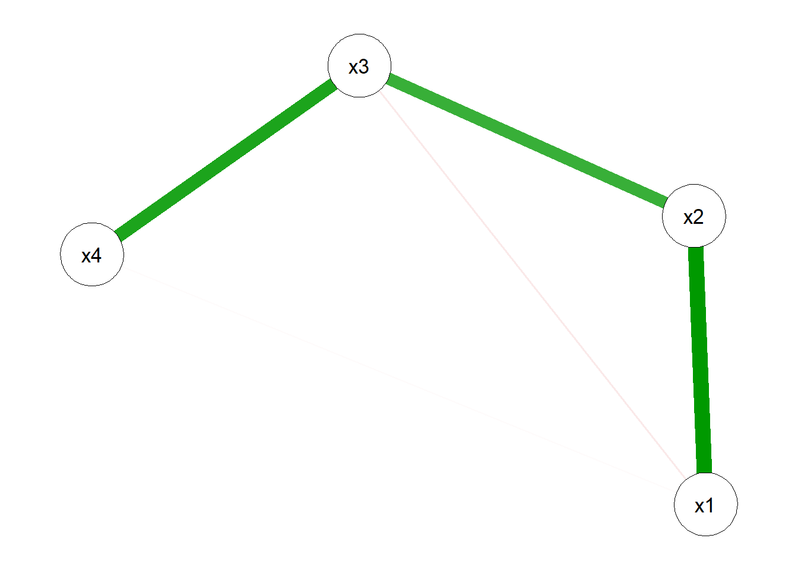

flowchart LR
subgraph Construct["Intended construct"]
D["D: deficiency<br/>(meant, not measured)"]
V1["V: valid<br/>overlap"]
end
subgraph Measure["Recorded measure"]
V2["V: valid<br/>overlap"]
C["C: contamination<br/>(measured, not meant)"]
end
V1 --- V2
3 Constructs vs. Variables
Almost everything marketing scientists care about is invisible. Brand equity, customer satisfaction, perceived quality, purchase intention, trust, involvement, loyalty. None of these can be read off an instrument the way a thermometer reads temperature. They are constructs: abstractions the research community invents, names, and agrees to treat as if they were real, precisely because doing so organizes a sprawl of otherwise disconnected observations. What we actually record (e.g., a click, a seven-point rating, a repeat purchase, a star count) are variables: observed quantities standing in for the construct we cannot see. The entire empirical enterprise of marketing rests on the bridge between the two, and most of what goes wrong in applied research goes wrong on that bridge.
This chapter is about that bridge. It develops, formally and with reproducible code, the distinction between a construct and the variables that measure it; the act of operationalization that connects them; and the two properties (validity and reliability) that determine whether the connection is any good. These ideas are fundamental in the literal sense: every later chapter that estimates a brand’s worth (Chapter 11), models a response function, or runs a regression is implicitly trusting that its left- and right-hand-side variables measure the constructs the theory is about. When that trust is misplaced, no amount of econometric sophistication downstream can repair it. Measurement error is not a nuisance to be cleaned up after the interesting modeling. For latent constructs, it is the modeling.
By the end of the chapter the reader should be able to: state what a latent construct is and write down its measurement model; distinguish reflective from formative operationalizations and explain why the choice changes which validity tests apply; decompose an observed score into true score and error and derive reliability from that decomposition; estimate reliability (coefficient alpha, the intraclass correlation, Cohen’s \(\kappa\)) and the components of validity (convergent, discriminant, nomological) from data; and recognize the construct-to-measure gap (i.e., the slippage between what we mean and what we record) in its many disguises. We lead with intuition and follow immediately with the formalism, because both audiences for this book need both.
3.1 Constructs, Variables, and the Gap Between Them
A variable is anything that varies across the units of analysis and can be recorded: it has a name, a measurement procedure, and a set of admissible values. A respondent’s age, the price paid, whether a coupon was redeemed, and the number on a Likert item are all variables. Variables are operational: their meaning is exhausted by the procedure that produces them. There is no ambiguity about what “the integer the respondent circled on item 3” means once the questionnaire is fixed.
A construct is a different kind of object. It is a conceptual term, deliberately constructed by researchers, that denotes a property of the unit which is not directly observable and whose meaning is given by a theoretical definition rather than a measurement procedure. “Customer satisfaction” is not identical to any single rating; it is the postulated psychological state that, the theory says, causes people to give high ratings, recommend the product, and buy again. The construct lives in the theory; the variables live in the dataset.
Note
The vocabulary is not standardized across fields. Psychometrics says latent variable; econometrics says unobservable or latent factor; structural-equation modeling says factor or construct; classical test theory says true score. We use construct for the theoretical concept, latent variable \(\eta\) for its formal representation inside a model, and indicator, measure, or manifest variable \(x\) for the observed quantity that proxies it. The relationships are the same regardless of dialect.
The distinction matters because constructs and variables fail to coincide in predictable, consequential ways. Call the slippage the construct-to-measure gap: the difference between the construct as theoretically intended and the construct as actually captured by the chosen measure. The gap has at least three faces.
First, deficiency: the measure omits part of the construct. A satisfaction scale that asks only about product quality misses satisfaction with price, service, and delivery; it is construct-deficient. Second, contamination: the measure captures things outside the construct. A self-report of “how healthy is your diet” is contaminated by social desirability bias (respondents report the construct plus their desire to look good). Third, distortion: the measure relates to the construct nonlinearly or non-monotonically, so that equal differences in the measure do not correspond to equal differences in the construct. Figure 3.1 diagrams the three failure modes against the ideal of a measure that maps cleanly onto its construct.
No measure is perfectly free of all three faults; the practical question is whether the valid overlap \(V\) is large enough, and the contamination \(C\) small and random enough, for the measure to support the inferences the study wants to draw. Making that question precise is the work of measurement theory.
“A construct is some postulated attribute of people, assumed to be reflected in test performance.” A construct is admitted into a science not because it can be observed but because a network of theoretical relations (i.e., a nomological network) gives it empirical consequences that can be checked.1
3.2 Latent Constructs and the Measurement Model
To reason formally, we need to represent a construct inside a model. Let \(\eta\) (eta) denote the latent variable standing for the construct for a generic unit, and let \(\mathbf{x} = (x_1,\dots,x_K)^\top\) be the vector of \(K\) observed indicators intended to measure it. A measurement model is a statement about how \(\mathbf{x}\) and \(\eta\) are related. Two such statements dominate marketing, and choosing between them is the single most consequential measurement decision a researcher makes (Coltman et al. 2008; Diamantopoulos, Fritz, and Hildebrandt 2013).
3.2.1 Reflective Measurement
In a reflective (effect-indicator) model the construct is a common cause of its indicators: each indicator is a noisy manifestation of the same underlying \(\eta\). The classic linear, unidimensional form is
\[x_k = \tau_k + \lambda_k\,\eta + \varepsilon_k, \qquad k = 1,\dots,K, \tag{3.1}\]
where \(\lambda_k\) is the loading (how strongly indicator \(k\) reflects the construct), \(\tau_k\) an intercept, and \(\varepsilon_k\) a measurement error satisfying \(\mathbb{E}[\varepsilon_k]=0\), \(\mathrm{Cov}(\eta,\varepsilon_k)=0\), and \(\mathrm{Cov}(\varepsilon_j,\varepsilon_k)=0\) for \(j\neq k\) (uncorrelated errors, the local-independence assumption). The arrows in a path diagram point from \(\eta\) to each \(x_k\), as in Figure 3.2.
Three properties follow immediately and are diagnostic of the reflective view. Because all indicators share the single common cause \(\eta\), they should be positively intercorrelated; because they are interchangeable expressions of the same thing, dropping one should not change the meaning of the construct, only the precision with which it is measured; and because each carries information about the same \(\eta\), internal consistency (do the items hang together?) is the relevant reliability question. The price premium, perceived quality, and loyalty items of a brand-equity scale are typically modeled this way (Yoo and Donthu 2001; Keller 1993).
3.2.2 Formative Measurement
In a formative (causal-indicator or composite) model the arrows reverse: the indicators are causes or components that together compose the construct,
\[\eta = \sum_{k=1}^{K} w_k\,x_k + \zeta, \tag{3.2}\]
with weights \(w_k\) and a disturbance \(\zeta\) capturing the part of \(\eta\) not accounted for by the chosen indicators. Here the indicators need not be correlated—they describe different facets—and they are emphatically not interchangeable: drop one and the construct itself changes. “Socioeconomic status” formed from income, education, and occupation is the textbook case; in marketing, many “marketing-mix exposure,” “deprivation,” or driver-based indices are formative, and whether brand equity is reflective or formative is a live and unsettled dispute (Chapter 11) (Henseler 2017; Coltman et al. 2008).
Warning
Misspecifying the direction is not a stylistic slip—it biases structural estimates and invalidates the usual reliability and validity diagnostics. Applying internal-consistency tests (which expect correlated indicators) to a formative index will reject perfectly good causal indicators for the “crime” of being uncorrelated; conversely, applying formative weighting to reflective items throws away the information that their shared variance is the construct (Diamantopoulos, Fritz, and Hildebrandt 2013; Bendle and Butt 2018a).
The two models are not nested and imply different psychometrics, summarized in Table 3.1. The decision is theoretical, not empirical: it is settled by asking whether the construct produces its indicators (reflective) or is defined by them (formative), a question data alone cannot answer (Coltman et al. 2008).
| Property | Reflective (Equation 3.1) | Formative (Equation 3.2) |
|---|---|---|
| Causal direction | construct \(\rightarrow\) indicators | indicators \(\rightarrow\) construct |
| Indicator intercorrelation | high, expected | not required |
| Interchangeability | items interchangeable | items not interchangeable |
| Effect of dropping an item | precision only | construct meaning changes |
| Reliability logic | internal consistency (\(\alpha\), \(\omega\), CR) | n/a; check indicator weights & VIF |
| Validity logic | convergent + discriminant + nomological | nomological + indicator validity |
| Error attaches to | each indicator (\(\varepsilon_k\)) | the construct (\(\zeta\)) |
flowchart LR
subgraph R["Reflective"]
direction TB
eta1(("η")) --> xr1["x₁"]
eta1 --> xr2["x₂"]
eta1 --> xr3["x₃"]
e1>"ε₁"] --> xr1
e2>"ε₂"] --> xr2
e3>"ε₃"] --> xr3
end
subgraph F["Formative"]
direction TB
xf1["x₁"] --> eta2(("η"))
xf2["x₂"] --> eta2
xf3["x₃"] --> eta2
z>"ζ"] --> eta2
end
3.3 The Econometric Bridge: Measurement-Error Models and Index Models
Readers trained in econometrics rather than psychometrics will recognize both measurement models under different names, and seeing the translation makes the reflective/formative choice less a piece of survey-methods folklore and more a familiar identification problem. The vocabulary differs across fields, but the algebra is the same, and the practical consequences (what is identified, what biases what, where instruments come from) map cleanly onto tools an empirical economist already owns.
3.3.1 Reflective Measurement Is the Common-Factor, Errors-in-Variables Model
The reflective specification of Equation 3.1 is, term for term, the classical errors-in-variables (EIV) measurement-error model. Write a single reflective indicator as \(x_k = \lambda_k \eta + \varepsilon_k\) (absorbing the intercept). The latent construct \(\eta\) is the true regressor, \(\varepsilon_k\) is classical measurement error (mean zero, uncorrelated with the true value, uncorrelated across indicators), and the observed \(x_k\) is the true value plus noise. This is exactly the setup econometrics texts use to motivate attenuation bias: regress an outcome on a mismeasured regressor and the slope is biased toward zero by the reliability ratio \(\sigma_\eta^2 / (\sigma_\eta^2 + \sigma_\varepsilon^2)\), which is precisely the CTT reliability of Equation 3.5. The disattenuation correction of Equation 3.6 is the psychometric name for Spearman’s correction for attenuation (Spearman 1904), the same object econometricians reach for under “regression dilution.” A reflective measurement model is therefore a system of EIV equations sharing one common true regressor \(\eta\), which is why factor analysis and confirmatory factor analysis (CFA) are its estimators: with three or more indicators of the same \(\eta\), the shared (common-factor) variance identifies \(\eta\) up to scale, and the unshared variance is relegated to the \(\varepsilon_k\). This is also where instrumental-variables intuition enters: a second reflective indicator \(x_j\) is, in effect, an instrument for the mismeasured \(x_k\), because \(x_j\) is correlated with the true \(\eta\) but (under local independence, \(\mathrm{Cov}(\varepsilon_j, \varepsilon_k) = 0\)) uncorrelated with \(x_k\)’s error. The structural-equation fix for measurement error (model \(\eta\) as latent and let multiple indicators identify it) is the multi-indicator generalization of instrumenting a noisy regressor with a second noisy measure of the same thing.
3.3.2 Formative Measurement Is a Composite Index of Causal Indicators
The formative specification of Equation 3.2 has no common factor at all. Here \(\eta = \sum_k w_k x_k + \zeta\) is a weighted composite of the indicators, and the indicators are causal (they define the construct) rather than effect indicators (manifestations of it). The econometric analogue is an index number or a regression-weighted composite: a consumer price index is built from component prices, a socioeconomic-status index from income, education, and occupation, a marketing-mix-pressure index from advertising, price, and distribution. The components need not be correlated, and dropping one changes what the index means (drop housing from the CPI and it is a different price level), which is exactly the formative warning that indicators are not interchangeable (K. Bollen and Lennox 1991; Diamantopoulos and Winklhofer 2001). The distinction lines up with the older statistical contrast between principal components (which form composites that maximize captured variance, an essentially formative operation) and common-factor analysis (which models shared variance attributable to a latent cause, the reflective operation): they answer different questions and should not be swapped casually.
The combined case is the MIMIC model (Multiple Indicators, Multiple Causes): the latent \(\eta\) has formative/causal indicators feeding into it and reflective/effect indicators flowing out of it. The reflective block supplies the scale and identification that a bare formative block lacks, which is the standard remedy for the under-identification of pure formative constructs (Diamantopoulos and Winklhofer 2001; MacKenzie, Podsakoff, and Podsakoff 2011; K. A. Bollen and Diamantopoulos 2017). Whether marketing constructs such as brand equity are best modeled reflectively or formatively, and whether causal-formative indicators are even coherent, remains actively debated (Jarvis, MacKenzie, and Podsakoff 2003; K. A. Bollen and Diamantopoulos 2017).
3.3.3 What Goes Wrong If You Fit the Wrong Model
The practical econometric consequences are sharp. Fitting a reflective model to formative data imposes a spurious common factor on indicators that have no reason to correlate; internal-consistency statistics (\(\alpha\), AVE) then reject perfectly valid causal indicators for the “crime” of being uncorrelated, and item purification (dropping low-correlating items) silently amputates the construct’s domain. Fitting a formative model to reflective data discards the shared-variance signal that is the construct, treating common-factor variance as if the weights were free parameters; the composite then absorbs indicator-specific error into \(\eta\), and the structural coefficients estimated downstream are contaminated by that error rather than purged of it. Misspecification also propagates into the structural model: Jarvis, MacKenzie, and Podsakoff (2003) document that a large share of constructs in top marketing journals are misspecified in direction, and that the resulting bias in structural paths can be substantial in either sign. Identification is the other failure mode. A reflective factor needs at least three indicators (or two inside a larger model) to be identified, as Chapter 3 discusses; a formative construct needs at least two outgoing paths (the MIMIC remedy) or its weights are not separately identified at all. The recurring lesson is the one econometricians already internalize for EIV models: you cannot infer the measurement direction from the covariance matrix, the model is identified only after the direction is assumed, and assuming the wrong direction biases everything that depends on the construct.
3.3.4 A Reflective CFA: Recovering a Latent Factor
The reflective-as-EIV claim is checkable. The chunk below simulates a single latent construct measured by four congeneric reflective indicators (unequal loadings), then fits a one-factor CFA in lavaan (Rosseel 2012) and recovers the loadings and the latent variance. The estimated loadings should track the population values used to generate the data, demonstrating that the common-factor machinery identifies \(\eta\) from the shared variance alone.
Code
# Ensure lavaan is available; install once if the render environment lacks it.
if (!requireNamespace("lavaan", quietly = TRUE)) {
install.packages("lavaan", repos = "https://cloud.r-project.org")
}
have_lavaan <- requireNamespace("lavaan", quietly = TRUE)Code
set.seed(8675)
n <- 600
lam <- c(0.85, 0.78, 0.70, 0.62) # population loadings (congeneric)
eta <- rnorm(n) # latent construct, Var = 1
err_sd <- sqrt(1 - lam^2) # error sd so each x has unit variance
X <- sapply(seq_along(lam), function(k) lam[k] * eta + rnorm(n, sd = err_sd[k]))
colnames(X) <- paste0("x", seq_along(lam))
refl_dat <- as.data.frame(X)
if (have_lavaan) {
cfa_mod <- "eta =~ x1 + x2 + x3 + x4"
fit <- lavaan::cfa(cfa_mod, data = refl_dat, std.lv = TRUE)
est <- lavaan::parameterEstimates(fit, standardized = TRUE)
loads <- est[est$op == "=~", c("rhs", "std.all")]
comp <- data.frame(indicator = loads$rhs,
population = lam,
recovered = round(loads$std.all, 3))
print(comp, row.names = FALSE)
} else {
cat("lavaan unavailable; skipping CFA demo.\n")
}
#> indicator population recovered
#> x1 0.85 0.828
#> x2 0.78 0.811
#> x3 0.70 0.707
#> x4 0.62 0.630The recovered standardized loadings sit close to the population values, and the residual variances absorb the indicator-specific error. The CFA has done what instrumenting a mismeasured regressor with a second measurement does: it has separated the true common signal \(\eta\) from the per-indicator noise \(\varepsilon_k\).
3.3.5 A MIMIC Model: Formative Causes and Reflective Effects
The MIMIC chunk makes the formative-plus-reflective combination concrete. Two causal indicators \(c_1, c_2\) (think income and education) form a latent \(\eta\) through known weights; \(\eta\) in turn emits three reflective effect indicators \(y_1, y_2, y_3\) that supply identification. We fit the MIMIC model in lavaan and recover the formative weights (the regressions of \(\eta\) on its causes) and the reflective loadings (the regressions of the effect indicators on \(\eta\)).
Code
set.seed(2024)
n <- 800
c1 <- rnorm(n) # causal indicator 1 (e.g., income)
c2 <- 0.3 * c1 + rnorm(n) # causal indicator 2 (mildly correlated)
w <- c(0.6, 0.4) # population formative weights
zeta <- rnorm(n, sd = 0.5) # construct-level disturbance
eta <- w[1] * c1 + w[2] * c2 + zeta
lam_y <- c(1.0, 0.8, 0.6) # reflective effect loadings (y1 is marker)
Y <- sapply(lam_y, function(l) l * eta + rnorm(n, sd = 0.5))
colnames(Y) <- paste0("y", seq_along(lam_y))
mimic_dat <- data.frame(c1 = c1, c2 = c2, Y)
if (have_lavaan) {
mimic_mod <- "
eta =~ y1 + y2 + y3 # reflective effect indicators (identify the scale)
eta ~ c1 + c2 # formative causal indicators (define the construct)
"
fit_m <- lavaan::sem(mimic_mod, data = mimic_dat)
pe <- lavaan::parameterEstimates(fit_m)
cat("Formative weights (eta ~ c):\n")
print(pe[pe$op == "~", c("rhs", "est", "se")], row.names = FALSE)
cat("\nReflective loadings (eta =~ y):\n")
print(pe[pe$op == "=~", c("rhs", "est", "se")], row.names = FALSE)
} else {
cat("lavaan unavailable; skipping MIMIC demo.\n")
}
#> Formative weights (eta ~ c):
#> rhs est se
#> c1 0.610 0.024
#> c2 0.382 0.022
#>
#> Reflective loadings (eta =~ y):
#> rhs est se
#> y1 1.000 0.000
#> y2 0.840 0.028
#> y3 0.598 0.024The estimated formative weights recover the population \(w = (0.6, 0.4)\) up to the scale fixed by the marker loading on \(y_1\), and the reflective loadings recover the descending pattern \((1.0, 0.8, 0.6)\). Without the reflective block the formative weights would not be separately identified, which is the practical content of the MIMIC identification rule and the reason a “pure” formative construct must emit at least two paths into the rest of the model.
3.3.6 Attenuation and Disattenuation in Base R
The last bridge is the one econometricians feel most directly: unreliable measurement attenuates correlations, and the Spearman correction reverses the attenuation when the reliabilities are known. The simulation below fixes a true-score correlation, degrades each variable with measurement error of known reliability, and confirms that the observed correlation shrinks to \(\rho_{TY}\sqrt{\rho_{XX'}\rho_{YY'}}\) (Equation 3.6), then disattenuates back to the truth.
Code
set.seed(1066)
n <- 50000
rho_true <- 0.50 # true-score correlation we want to recover
rel_x <- 0.70 # reliability of X
rel_y <- 0.60 # reliability of Y
# Two true scores with the target correlation
L <- chol(matrix(c(1, rho_true, rho_true, 1), 2))
TT <- matrix(rnorm(n * 2), n, 2) %*% L
Tx <- TT[, 1]; Ty <- TT[, 2]
# Add classical error so observed reliabilities equal rel_x, rel_y.
# Var(true) = 1, so error variance = (1 - rel)/rel makes true-share = rel.
ex <- rnorm(n, sd = sqrt((1 - rel_x) / rel_x))
ey <- rnorm(n, sd = sqrt((1 - rel_y) / rel_y))
X <- Tx + ex
Y <- Ty + ey
r_obs <- cor(X, Y) # attenuated, observable
r_pred <- rho_true * sqrt(rel_x * rel_y) # attenuation formula
r_disatt <- r_obs / sqrt(rel_x * rel_y) # Spearman disattenuation
cat(sprintf("True-score correlation : %.3f\n", rho_true))
#> True-score correlation : 0.500
cat(sprintf("Attenuation-formula prediction : %.3f\n", r_pred))
#> Attenuation-formula prediction : 0.324
cat(sprintf("Observed (attenuated) corr : %.3f\n", r_obs))
#> Observed (attenuated) corr : 0.326
cat(sprintf("Disattenuated estimate : %.3f\n", r_disatt))
#> Disattenuated estimate : 0.504The observed correlation lands near the attenuation-formula prediction, well below the true 0.50, and dividing out the square roots of the reliabilities returns an estimate close to the truth. The managerial moral restates Equation 3.6 in econometric dress: a regression on noisy survey constructs understates the effect, and “we found nothing” is uninterpretable until the reliabilities are reported, because a near-zero slope is exactly what attenuation manufactures from a real effect measured badly.
3.4 Operationalization: From Concept to Instrument
Operationalization is the act of specifying the procedure that turns a construct into a variable—the rule that says “to measure perceived quality, ask these four questions on these scales and average them.” It is where theory makes contact with data, and it is irreversible in the sense that downstream analysis can never recover construct meaning that the operationalization failed to capture.
The classical paradigm for developing a reflective scale proceeds through a disciplined sequence: (1) specify the domain of the construct from theory; (2) generate an item pool broad enough to cover the domain (guarding against deficiency); (3) purify the items by collecting data and discarding those that correlate poorly with the rest; (4) assess reliability on a fresh sample; and (5) assess validity against external criteria and related constructs.2 The logic is iterative because operationalization is fallible: the first item pool is almost always both deficient and contaminated, and only data exposes which items do which.
A single construct can be operationalized in radically different ways, and the choice carries assumptions. Customer satisfaction can be measured by a self-reported rating (cheap, but contaminated by mood and response styles), by revealed behavior such as repurchase (objective, but deficient—repurchase also reflects switching costs and availability), or by a physiological or textual signal mined from reviews (scalable, but distortion-prone). Each operationalization trades the three faces of the gap differently; none is uniquely correct, and reporting which one was used is part of reporting the result. A recurring error in applied work is to treat a convenient managerial metric (e.g., a single top-box satisfaction percentage, or a Net Promoter score) as if it were the construct itself, when it is one deficient operationalization among many (Bendle and Butt 2018b, 2018a).
3.5 Classical Test Theory and the Anatomy of a Score
To define reliability we need a model of what an observed score is. Classical test theory (CTT) supplies the simplest one. It decomposes an observed score \(X\) for a single indicator into a true score \(T\) and an error \(E\):
\[X = T + E, \qquad T \equiv \mathbb{E}[X], \qquad \mathbb{E}[E] = 0, \qquad \mathrm{Cov}(T, E) = 0. \tag{3.3}\]
The true score is defined as the expected value of the observed score over hypothetical independent replications of the measurement on the same unit—not as the Platonic construct value, a subtlety we return to under validity. Error is random: by construction it is mean-zero and uncorrelated with the true score. Because \(T\) and \(E\) are uncorrelated, the observed variance partitions cleanly,
\[\sigma_X^2 = \sigma_T^2 + \sigma_E^2 . \tag{3.4}\]
Reliability \(\rho_{XX'}\) is then defined as the share of observed variance that is true-score variance,
\[\rho_{XX'} \;=\; \frac{\sigma_T^2}{\sigma_X^2} \;=\; \frac{\sigma_T^2}{\sigma_T^2 + \sigma_E^2} \;=\; \mathrm{Corr}(X, X')^2\ \text{-free form}\ = \mathrm{Corr}(X, X'), \tag{3.5}\]
where \(X'\) is a parallel measurement (same \(T\), same \(\sigma_E^2\), independent error). The last equality is the operational content of the definition: reliability equals the correlation between two parallel measurements of the same thing, which is why test–retest and split-half correlations estimate it. Reliability ranges from 0 (all noise) to 1 (no error); it has no units and is a property of scores in a population, not of an instrument in the abstract.
Two immediate consequences shape everything downstream. First, attenuation: unreliability in a predictor biases its estimated effect toward zero. If a true relationship has correlation \(\rho_{TY}\) but \(X\) measures \(T\) with reliability \(\rho_{XX'}\), the observable correlation is
\[\rho_{XY} = \rho_{TY}\,\sqrt{\rho_{XX'}\,\rho_{YY'}}, \tag{3.6}\]
so noisy measurement systematically understates effects—a fact that makes “we found no effect” uninterpretable without a reliability figure. Second, aggregation buys reliability: averaging \(K\) parallel indicators leaves the true score intact but shrinks error variance by \(1/K\), so the reliability of a \(K\)-item sum rises with \(K\) via the Spearman–Brown relation \(\rho_K = K\rho_1 / [1 + (K-1)\rho_1]\). This is the formal reason multi-item scales beat single items, and why Equation 3.1 is worth the trouble.
3.6 Reliability in Practice
Reliability is estimated, not known. The estimator depends on which replication the data approximate.
3.6.1 Internal Consistency: Coefficient Alpha
The most reported estimate is coefficient alpha (Cronbach’s \(\alpha\)), which treats the \(K\) items of one administration as approximately parallel replications. With \(\sigma_i^2\) the variance of item \(i\) and \(\sigma_X^2\) the variance of the total score \(X=\sum_i x_i\),
\[\alpha = \frac{K}{K-1}\left(1 - \frac{\sum_{i=1}^{K}\sigma_i^2}{\sigma_X^2}\right). \tag{3.7}\]
Alpha is a lower bound on reliability under the assumption of (essentially) \(\tau\)-equivalent items—equal loadings, Equation 3.1 with all \(\lambda_k\) equal. When loadings differ, \(\alpha\) underestimates reliability, and McDonald’s \(\omega\) (which uses the estimated loadings directly) is preferable. Two cautions are worth stating plainly: \(\alpha\) rises mechanically with \(K\), so a high \(\alpha\) can simply mean “many items,” not “good items”; and \(\alpha\) presupposes a reflective, unidimensional construct—it is meaningless for a formative index (Table 3.1).3
Code
set.seed(2718)
n <- 500 # respondents
K <- 4 # reflective indicators
lambda <- c(0.9, 0.8, 0.7, 0.6) # item loadings
eta <- rnorm(n) # latent construct (standardized)
err <- sapply(sqrt(1 - lambda^2), # error sd from loadings
function(s) rnorm(n, sd = s))
X <- sweep(err, 2, lambda, `+`) + # x_k = lambda_k * eta + e_k
outer(eta, lambda)
# Coefficient alpha from equation (eq-02-alpha), implemented directly
cronbach_alpha <- function(items) {
k <- ncol(items)
item_var <- sum(apply(items, 2, var))
total_var <- var(rowSums(items))
(k / (k - 1)) * (1 - item_var / total_var)
}
alpha_hat <- cronbach_alpha(X)
round(alpha_hat, 3)
#> [1] 0.8373.6.2 Stability and Agreement: ICC and Cohen’s \(\kappa\)
When the replication is across time (test–retest) or across raters, reliability is an intraclass correlation (ICC): the share of total variance attributable to stable between-unit differences rather than to occasion- or rater-specific noise. For a one-way model with unit effect \(u_i\) and residual \(e_{ij}\), the ICC is \(\sigma_u^2 / (\sigma_u^2 + \sigma_e^2)\), the same true-over-total ratio as Equation 3.5, now estimated from a variance-components decomposition. The forms—single vs. average rater, consistency vs. absolute agreement—must be matched to the design, a distinction made canonical for the field by Shrout and Fleiss (1979).
For categorical judgments (does this review express complaint? is this ad emotional?), correlation is inappropriate and the relevant statistic is Cohen’s \(\kappa\), which corrects observed agreement \(p_o\) for the agreement \(p_e\) expected by chance:
\[\kappa = \frac{p_o - p_e}{1 - p_e}. \tag{3.8}\]
A \(\kappa\) of 0 means raters agree only as often as random labeling would predict; 1 means perfect agreement (Cohen 1960). The widely used verbal benchmarks—slight, fair, moderate, substantial, almost perfect—come from Landis and Koch (1977), though they are conventions, not laws. The example below estimates both an ICC for ratings and a \(\kappa\) for binary codings on simulated data.
Code
set.seed(1414)
## ---- Intraclass correlation (two raters, continuous ratings) -------------
n <- 200
true_q <- rnorm(n, mean = 0, sd = 1) # stable latent quality of object i
r1 <- true_q + rnorm(n, sd = 0.6) # rater 1
r2 <- true_q + rnorm(n, sd = 0.6) # rater 2
# One-way ICC via variance components (between-object / total)
ms_between <- 2 * var(rowMeans(cbind(r1, r2))) # 2 raters per object
ms_within <- mean((r1 - r2)^2) / 2
icc <- (ms_between - ms_within) / (ms_between + ms_within)
round(icc, 3)
#> [1] 0.764
## ---- Cohen's kappa (two coders, binary labels) ---------------------------
latent <- rnorm(n)
code1 <- as.integer(latent + rnorm(n, sd = 0.7) > 0) # coder 1
code2 <- as.integer(latent + rnorm(n, sd = 0.7) > 0) # coder 2
tab <- table(code1, code2)
p_o <- sum(diag(tab)) / sum(tab) # observed agreement
p_e <- sum(rowSums(tab) * colSums(tab)) / sum(tab)^2 # chance agreement
kappa <- (p_o - p_e) / (1 - p_e) # equation (eq-02-kappa)
round(c(p_o = p_o, p_e = p_e, kappa = kappa), 3)
#> p_o p_e kappa
#> 0.735 0.500 0.471High reliability is necessary but not sufficient. A bathroom scale that reads three kilograms heavy is perfectly reliable and perfectly wrong: it returns the same number every time (no error variance) while measuring the wrong true score. The missing property is validity.
3.7 Validity: Are We Measuring the Right Thing?
Validity asks whether a measure captures the construct it claims to capture— whether the true score \(T\) in Equation 3.3 actually equals (or tracks) the construct \(\eta\), rather than some neighboring or contaminating quantity. Modern measurement theory treats validity not as a property a measure simply has, but as a body of evidence accumulated for a particular interpretation and use. Several complementary strands of evidence are standard.
Content validity is the (largely judgmental) question of whether the item pool covers the construct’s domain without straying outside it—directly the deficiency/contamination trade-off of Figure 3.1, assessed by expert review before any data are collected.
Convergent validity asks whether indicators that should measure the same construct actually correlate. In a reflective model it is read off the loadings: high, significant \(\lambda_k\) mean the indicators share the common cause. A standard summary is the average variance extracted (AVE), the mean squared standardized loading,
\[\mathrm{AVE} = \frac{1}{K}\sum_{k=1}^{K}\lambda_k^2 , \tag{3.9}\]
interpreted as the share of indicator variance the construct explains; \(\mathrm{AVE} \geq 0.5\) (the construct explains more than half the indicator variance) is the conventional threshold (Fornell and Larcker 1981).
Discriminant validity asks the reverse: whether a construct is empirically distinct from other constructs it is not supposed to be identical to. The classic Fornell and Larcker (1981) criterion requires a construct’s AVE to exceed its squared correlation with every other construct—each construct shares more variance with its own indicators than with any other construct. (More recent work argues the heterotrait–monotrait ratio of correlations detects discriminant-validity problems the Fornell–Larcker criterion misses, especially when loadings are similar across constructs.)4
Nomological (construct) validity is the deepest and the one that ties back to the definition of a construct: does the measure relate to other constructs the way theory predicts? A valid satisfaction measure should predict repurchase and word of mouth, correlate with perceived quality, and be largely unrelated to, say, respondent handedness. The web of predicted relations is the nomological network, and a measure earns construct validity by behaving as the network says it should. This is also where validity and reliability finally separate cleanly: reliability concerns the consistency of \(X\) around its true score \(T\); validity concerns whether \(T\) is the right \(T\). Figure 3.3 lays out the strands and the questions they answer.
flowchart TB M["Observed measure x"] M --> REL["Reliability:<br/>is x consistent<br/>around its true score?"] M --> VAL["Validity:<br/>is the true score<br/>the right construct?"] VAL --> CON["Content:<br/>does it cover<br/>the domain?"] VAL --> CONV["Convergent:<br/>do same-construct<br/>items agree? (AVE)"] VAL --> DISC["Discriminant:<br/>is it distinct from<br/>other constructs?"] VAL --> NOMO["Nomological:<br/>does it relate to<br/>other constructs<br/>as theory predicts?"]
3.7.1 A Worked Convergent/Discriminant Check
The reflective machinery is concrete. The example below simulates two correlated latent constructs, each with three reflective indicators, then recovers the loadings by factor analysis, computes each construct’s AVE from Equation 3.9, and applies the Fornell–Larcker discriminant test: AVE must exceed the squared inter-construct correlation.
Code
set.seed(3142)
n <- 600
# Two latent constructs with a true correlation of 0.45
Sigma <- matrix(c(1, 0.45, 0.45, 1), 2)
L <- chol(Sigma)
F <- matrix(rnorm(n * 2), n, 2) %*% L
colnames(F) <- c("eta_A", "eta_B")
lam_A <- c(0.85, 0.80, 0.75) # loadings, construct A
lam_B <- c(0.80, 0.78, 0.70) # loadings, construct B
make_block <- function(eta, lam) {
sapply(lam, function(l) l * eta + rnorm(length(eta), sd = sqrt(1 - l^2)))
}
A <- make_block(F[, "eta_A"], lam_A)
B <- make_block(F[, "eta_B"], lam_B)
dat <- data.frame(A, B)
names(dat) <- c(paste0("a", 1:3), paste0("b", 1:3))
# Recover loadings with a 2-factor maximum-likelihood EFA
fa <- factanal(dat, factors = 2, rotation = "promax")
load <- fa$loadings[, 1:2]
# Average variance extracted per construct (eq-02-ave), using the dominant factor
ave_A <- mean(load[1:3, which.max(colSums(abs(load[1:3, ])))]^2)
ave_B <- mean(load[4:6, which.max(colSums(abs(load[4:6, ])))]^2)
# Inter-construct correlation from estimated factor scores
fs <- factanal(dat, factors = 2, rotation = "promax", scores = "regression")$scores
phi2 <- cor(fs[, 1], fs[, 2])^2
cat("AVE construct A:", round(ave_A, 3), "\n")
#> AVE construct A: 0.669
cat("AVE construct B:", round(ave_B, 3), "\n")
#> AVE construct B: 0.59
cat("Squared factor correlation:", round(phi2, 3), "\n")
#> Squared factor correlation: 0.124
cat("Fornell-Larcker passes (both AVE > shared var)? ",
ave_A > phi2 && ave_B > phi2, "\n")
#> Fornell-Larcker passes (both AVE > shared var)? TRUEBoth AVEs comfortably exceed 0.5 (convergent validity) and exceed the squared inter-construct correlation (discriminant validity): the indicators measure their own construct better than they measure the neighbor. Had we forced the two constructs to correlate near 1, the discriminant test would fail—the data would be telling us we had relabeled one construct as two.
3.8 Identification: What Pins a Latent Model Down
A latent variable has no inherent scale—nothing in Equation 3.1 fixes the units or origin of \(\eta\), since multiplying \(\eta\) by a constant and dividing every \(\lambda_k\) by the same constant leaves all observables unchanged. A measurement model is identified only after this indeterminacy is removed and enough constraints are imposed that the parameters are recoverable from the covariance matrix of the indicators. The standard fixes are to standardize the latent variable (\(\mathrm{Var}(\eta)=1\)) or to fix one loading (a marker indicator, \(\lambda_1 = 1\)), which sets the scale; the construct’s mean is fixed similarly by an intercept constraint.
Beyond scaling, identification requires enough indicators. With a single latent factor and uncorrelated errors, the covariance structure has \(K(K+1)/2\) knowns and \(2K\) unknowns (loadings and error variances) plus one variance; the rule of thumb is that at least three indicators per reflective factor are needed for a single factor to be just-identified, and two suffice only when the factor is embedded in a larger model that supplies extra constraints. What breaks identification is then predictable: too few indicators (the model has more parameters than the covariance matrix can determine); error terms that are in fact correlated (violating local independence, so shared method variance masquerades as the construct); and—most relevant to the reflective/formative debate—a formative construct that is not emitted into the model with at least two outgoing paths to other constructs or indicators, without which Equation 3.2 has no scale and the weights \(w_k\) are not separately identified (Diamantopoulos, Fritz, and Hildebrandt 2013; Henseler 2017). The lesson generalizes: identification failures in latent-variable models are usually a symptom that the measurement model and the theory disagree about how many things are being measured.
3.9 Common-Method Variance and Other Contamination
The CTT assumption that errors are random and uncorrelated (Equation 3.3, Equation 3.1) is the one most often violated in practice, and the violation has a name. Common-method variance (CMV) is systematic error shared across indicators because they were collected by the same method—the same respondent, on the same survey, at the same moment, using the same response scale. CMV induces correlation among the \(\varepsilon_k\), which the reflective model attributes to the construct, inflating loadings, reliability, and—most damagingly—the correlations between constructs measured by the same method. A satisfaction–loyalty correlation estimated from a single self-report survey is partly a measurement of the respondent’s consistent way of answering surveys.
CMV is contamination in the precise sense of Figure 3.1: variance that is measured but not meant. It cannot be detected by reliability statistics—shared method variance raises \(\alpha\)—which is exactly why a high \(\alpha\) is no defense. Procedural remedies (separating the measurement of predictor and outcome in time or source, varying scale formats, guaranteeing anonymity to reduce social-desirability pressure) attack the cause; statistical remedies (modeling a latent method factor that loads on all indicators, or using marker variables theoretically unrelated to the constructs) attempt to partition method variance from trait variance after the fact.5 The deeper point for this chapter is that the construct-to-measure gap is not a one-time design choice but a property that travels with the data into every downstream model; an analyst who inherits a single-source survey inherits its contamination whether or not the original authors named it.
3.10 From Measurement Error to Decision Error
Constructs and variables ultimately serve decisions: launch or not, target or not, attribute the lift to the campaign or not. It is worth closing the loop between the measurement error studied above and the decision error it produces, because the two are routinely confused. Suppose a measure is used to classify—high-value vs. low-value customer, satisfied vs. dissatisfied, treatment worked vs. did not. The construct has a true state; the measure yields a verdict; and the four combinations form the confusion matrix in Table 3.2.
| Construct true | Construct false | |
|---|---|---|
| Measure says true | correct (true positive) | Type I error (false positive) |
| Measure says false | Type II error (false negative) | correct (true negative) |
The connection to the earlier formalism is direct. A measure with low validity shifts the whole verdict distribution off the construct, trading one error type for the other systematically (a biased scale, like the three-kilo bathroom scale). A measure with low reliability fattens the spread of verdicts around the truth, raising both error rates at once (a noisy scale). And attenuation (Equation 3.6) guarantees that unreliable predictors make real effects look smaller than they are, so the most common decision error in marketing analytics—concluding “no effect” from a noisy measure—is a measurement failure wearing the costume of a null result. The discipline of distinguishing construct from variable is, in the end, the discipline of knowing how much of a number to believe.
3.11 Where Construct Measurement Is Today
The apparatus developed above (the reflective common-factor model, classical test theory, the convergent/discriminant battery) is the canon, and it dates from the 1950s through the 1990s. It is not where the field stopped. Four developments of roughly the last fifteen years have reshaped how construct measurement is conceived and practiced, and a PhD reader should know them not as exotic options but as the current state of the art.
3.11.1 Modern Validity Theory: The Ontological Turn
Classical construct validity, in the Cronbach and Meehl tradition with which this chapter opens, treats validity as an epistemic property of inferences: a measure is valid to the degree that the evidence supports interpreting its scores a certain way. Borsboom, Mellenbergh, and Heerden (2004) reframed validity as an ontological and causal claim about the measurement process itself: a test is valid for an attribute if and only if the attribute exists and variation in it causes variation in the test scores. This is a sharper and more demanding criterion, and it bears directly on the reflective/formative distinction of Section 3.3. The causal definition is natural for reflective measurement (the construct causes its indicators, exactly the EIV structure) and awkward for formative measurement (where the indicators cause the construct), which is part of why the formative case remains contested (K. A. Bollen and Diamantopoulos 2017). The practical upshot is that demonstrating validity is not exhausted by accumulating correlations; it requires a defensible account of why the construct should drive the responses, a process theory the nomological network only gestures at.
3.11.2 Network Psychometrics: Constructs Without a Latent Cause
The most radical recent alternative abandons the latent common cause altogether. Network psychometrics (Borsboom and Cramer 2013) models a construct not as a hidden variable that emits correlated indicators, but as a system of mutually reinforcing observables: an emergent property of a network of items that directly influence one another. In a satisfaction network, a positive service experience raises the likelihood of repurchase intent, which reinforces recommendation, which feeds back, without any single latent satisfaction variable causing all three. Statistically, the construct is a densely connected cluster in a regularized partial-correlation network (typically estimated by the graphical LASSO with EBIC model selection), where an edge is a conditional dependence between two items after partialling out all others. The tooling is mature: qgraph for estimation and visualization (Epskamp et al. 2012) and bootnet for assessing edge and centrality stability by bootstrapping (Epskamp, Borsboom, and Fried 2018). For marketing this matters because many “constructs” (customer engagement, brand relationship, well-being) plausibly are feedback systems rather than reflections of a single latent state, and the network view offers a measurement model that does not force a common factor onto them. The chunk below sketches the idea on a small simulated correlation matrix, falling back to a plain partial-correlation network if the specialized packages are not installed.
Code
set.seed(4040)
# Simulate items from a sparse "network" of conditional dependencies:
# a chain x1 - x2 - x3 - x4 (each item depends mainly on its neighbours).
n <- 1000
x1 <- rnorm(n)
x2 <- 0.6 * x1 + rnorm(n, sd = 0.8)
x3 <- 0.6 * x2 + rnorm(n, sd = 0.8)
x4 <- 0.6 * x3 + rnorm(n, sd = 0.8)
net_dat <- data.frame(x1, x2, x3, x4)
# Partial-correlation matrix: the network-psychometrics object.
# Edges are conditional dependencies (off-diagonal of the negated, scaled precision matrix).
prec <- solve(cor(net_dat))
pcor <- -prec / sqrt(outer(diag(prec), diag(prec)))
diag(pcor) <- 1
cat("Partial-correlation (conditional dependence) matrix:\n")
#> Partial-correlation (conditional dependence) matrix:
print(round(pcor, 2))
#> x1 x2 x3 x4
#> x1 1.00 0.57 -0.05 -0.01
#> x2 0.57 1.00 0.44 0.00
#> x3 -0.05 0.44 1.00 0.51
#> x4 -0.01 0.00 0.51 1.00
# The strong edges sit on the chain (x1-x2, x2-x3, x3-x4); non-adjacent
# pairs are near zero once their neighbours are partialled out -- the
# hallmark of a network rather than a single common factor.
if (requireNamespace("qgraph", quietly = TRUE)) {
qgraph::qgraph(pcor, graph = "default", layout = "spring",
labels = colnames(net_dat))
}
The adjacent items show strong partial correlations while non-adjacent items, conditioned on their neighbors, drop to near zero: the signature of a network structure that a single-factor reflective model would misread as one latent cause.
3.11.3 Bayesian Measurement and Bifactor Models
Two refinements of the latent-variable program belong to the modern toolkit. Bayesian structural equation modeling, implemented in blavaan (Merkle and Rosseel 2018), fits CFA and SEM with priors on loadings and variances and returns a full posterior for every parameter rather than a point estimate and a standard error. The payoffs are practical: principled inference in small samples (where maximum-likelihood standard errors are unreliable), honest uncertainty intervals for derived quantities like reliability and AVE, and the ability to encode prior knowledge (a loading is expected to be large and positive) instead of pretending to ignore it. Bifactor models (Reise 2012) address a question this chapter raised but did not resolve: when can a multidimensional battery be summed into a single score? A bifactor model decomposes each item into a general factor common to all items plus an orthogonal group factor specific to its subscale. The omega-hierarchical coefficient and the explained-common-variance statistic then quantify how much of the reliable variance is general rather than group-specific, giving a defensible answer to “is this scale essentially unidimensional enough to total?” that coefficient \(\alpha\) (which cannot see multidimensionality at all, Equation 3.7) never could.
3.11.4 Machine-Learning and Text-Based Construct Measurement
Finally, construct measurement is increasingly computational. Constructs that once required a survey (brand sentiment, perceived warmth, complaint intensity, political ideology) are now scored directly from text, images, and behavior using supervised classifiers, word and sentence embeddings, and large language models prompted to rate open-ended responses. This scales measurement to millions of observations and to data the respondent never knew was being measured, but it does not repeal the validity problem; it relocates it. An LLM that scores review text for “satisfaction” is one more operationalization, with its own deficiency (it may miss satisfaction expressed sarcastically), contamination (it may pick up reviewer verbosity or product category), and distortion (its scores may be nonlinear in the true construct). The emerging program of computational construct validity applies the same logic developed in this chapter to these automated measures: validate the machine score against a human-rated gold standard (a convergent-validity check), test that it relates to other constructs as theory predicts (a nomological check), and probe it for the method variance and bias that any single source introduces. The construct-to-measure gap of Figure 3.1 is exactly as real for an embedding as for a Likert item; the model is faster and cheaper, not more valid by default. The multimodal-data chapter develops these automated measures in detail; the point here is that they are governed by the measurement theory of this chapter, not exempt from it.
3.12 Key Takeaways
- A construct is a theoretical concept defined by its role in a nomological network; a variable is an observed quantity defined by its measurement procedure. The construct-to-measure gap—deficiency, contamination, distortion—is where applied research most often fails (Figure 3.1).
- The measurement model must be specified as reflective (Equation 3.1, construct causes indicators) or formative (Equation 3.2, indicators compose construct); the choice is theoretical, not empirical, and it dictates which reliability and validity tests even apply (Table 3.1) (Coltman et al. 2008; Diamantopoulos, Fritz, and Hildebrandt 2013).
- Reliability is the true-score share of observed variance (Equation 3.5); estimate it by coefficient \(\alpha\) (Equation 3.7) for internal consistency, the ICC (Shrout and Fleiss 1979) for raters/occasions, and Cohen’s \(\kappa\) (Equation 3.8) (Cohen 1960; Landis and Koch 1977) for categorical codings. Unreliability attenuates estimated effects toward zero (Equation 3.6).
- Validity asks whether the true score is the right construct: content, convergent (AVE, Equation 3.9), discriminant (Fornell–Larcker), and nomological evidence together build the case (Fornell and Larcker 1981). High reliability does not imply validity.
- Latent models must be identified (scale set, \(\geq 3\) reflective indicators, local independence); common-method variance violates the random-error assumption and is invisible to reliability statistics, so it must be designed out, not tested away.
- The measurement models translate into econometrics: reflective measurement is the common-factor, errors-in-variables model (a second indicator instruments the first, and unreliability attenuates correlations, Section 3.3), while formative measurement is a causal-indicator index, identified only as a MIMIC model with reflective effect indicators supplying the scale (K. Bollen and Lennox 1991; Diamantopoulos and Winklhofer 2001; MacKenzie, Podsakoff, and Podsakoff 2011).
- Construct measurement did not stop at the canon: modern validity theory makes validity a causal claim (Borsboom, Mellenbergh, and Heerden 2004); network psychometrics models constructs as systems of interacting observables rather than latent causes (Borsboom and Cramer 2013; Epskamp, Borsboom, and Fried 2018); Bayesian (Merkle and Rosseel 2018) and bifactor (Reise 2012) models extend the latent program; and machine-learning and text-based measures relocate, but do not repeal, the validity problem (Section 3.11).
3.13 Further Reading
The reflective/formative distinction and its consequences for marketing measurement are developed in Coltman et al. (2008), Diamantopoulos, Fritz, and Hildebrandt (2013), and Henseler (2017); the foundational statements that misspecifying measurement direction biases structural estimates are K. Bollen and Lennox (1991) and Jarvis, MacKenzie, and Podsakoff (2003), with construction and identification procedures in Diamantopoulos and Winklhofer (2001) and MacKenzie, Podsakoff, and Podsakoff (2011) and the continuing debate over causal-formative indicators in K. A. Bollen and Diamantopoulos (2017). The misuse of metrics that confuse a managerial number for a construct is dissected in Bendle and Butt (2018b) and Bendle and Butt (2018a). The classical convergent/discriminant apparatus traces to Fornell and Larcker (1981), agreement and rater reliability to Shrout and Fleiss (1979), Cohen (1960), and Landis and Koch (1977), and the attenuation correction to Spearman (1904). For where the field has moved since, see Borsboom, Mellenbergh, and Heerden (2004) on the causal concept of validity, Borsboom and Cramer (2013) and Epskamp, Borsboom, and Fried (2018) on network psychometrics (with qgraph, Epskamp et al. (2012)), Merkle and Rosseel (2018) on Bayesian SEM, and Reise (2012) on bifactor models; the covariance-structure framework underlying all of this is laid out in Bollen (1989). The branding chapter (Chapter 11) shows these abstractions doing concrete work, where whether brand equity is reflective or formative remains an open and consequential question.
Bendle, Neil Thomas, and Moeen Naseer Butt. 2018a. “The Misuse of Accounting-Based Approximations of Tobin’sq in a World of Market-Based Assets.” Marketing Science 37 (3): 484–504.
———. 2018b. “The Misuse of Accounting-Based Approximations of Tobin’s q in a World of Market-Based Assets.” Marketing Science 37 (3): 484–504. https://doi.org/10.1287/mksc.2018.1093.
Bollen, Kenneth A., and Adamantios Diamantopoulos. 2017. “In Defense of Causal-Formative Indicators: A Minority Report.” Psychological Methods 22 (3): 581–96. https://doi.org/10.1037/met0000056.
Bollen, Kenneth, and Richard Lennox. 1991. “Conventional Wisdom on Measurement: A Structural Equation Perspective.” Psychological Bulletin 110 (2): 305–14. https://doi.org/10.1037/0033-2909.110.2.305.
Borsboom, Denny, and Angélique O. J. Cramer. 2013. “Network Analysis: An Integrative Approach to the Structure of Psychopathology.” Annual Review of Clinical Psychology 9: 91–121. https://doi.org/10.1146/annurev-clinpsy-050212-185608.
Borsboom, Denny, Gideon J. Mellenbergh, and Jaap van Heerden. 2004. “The Concept of Validity.” Psychological Review 111 (4): 1061–71. https://doi.org/10.1037/0033-295X.111.4.1061.
Cohen, Jacob. 1960. “A Coefficient of Agreement for Nominal Scales.” Educational and Psychological Measurement 20 (1): 37–46. https://doi.org/10.1177/001316446002000104.
Coltman, Tim, Timothy M. Devinney, David F. Midgley, and Sunil Venaik. 2008. “Formative Versus Reflective Measurement Models: Two Applications of Formative Measurement.” Journal of Business Research 61 (12): 1250–62. https://doi.org/10.1016/j.jbusres.2008.01.013.
Diamantopoulos, Adamantios, Wolfgang Fritz, and Lutz Hildebrandt. 2013. Quantitative Marketing and Marketing Management: Marketing Models and Methods in Theory and Practice. Springer.
Diamantopoulos, Adamantios, and Heidi M. Winklhofer. 2001. “Index Construction with Formative Indicators: An Alternative to Scale Development.” Journal of Marketing Research 38 (2): 269–77. https://doi.org/10.1509/jmkr.38.2.269.18845.
Epskamp, Sacha, Denny Borsboom, and Eiko I. Fried. 2018. “Estimating Psychological Networks and Their Accuracy: A Tutorial Paper.” Behavior Research Methods 50 (1): 195–212. https://doi.org/10.3758/s13428-017-0862-1.
Epskamp, Sacha, Angélique O. J. Cramer, Lourens J. Waldorp, Verena D. Schmittmann, and Denny Borsboom. 2012. “Qgraph: Network Visualizations of Relationships in Psychometric Data.” Journal of Statistical Software 48 (4): 1–18. https://doi.org/10.18637/jss.v048.i04.
Fornell, Claes, and David F. Larcker. 1981. “Structural Equation Models with Unobservable Variables and Measurement Error: Algebra and Statistics.” Journal of Marketing Research 18 (3): 382. https://doi.org/10.2307/3150980.
Henseler, Jörg. 2017. “Bridging Design and Behavioral Research With Variance-Based Structural Equation Modeling.” Journal of Advertising 46 (1): 178–92. https://doi.org/10.1080/00913367.2017.1281780.
Jarvis, Cheryl Burke, Scott B. MacKenzie, and Philip M. Podsakoff. 2003. “A Critical Review of Construct Indicators and Measurement Model Misspecification in Marketing and Consumer Research.” Journal of Consumer Research 30 (2): 199–218. https://doi.org/10.1086/376806.
Keller, Kevin Lane. 1993. “Conceptualizing, Measuring, and Managing Customer-Based Brand Equity.” Journal of Marketing 57 (1): 1. https://doi.org/10.2307/1252054.
Landis, J. Richard, and Gary G. Koch. 1977. “The Measurement of Observer Agreement for Categorical Data.” Biometrics 33 (1): 159. https://doi.org/10.2307/2529310.
MacKenzie, Scott B., Philip M. Podsakoff, and Nathan P. Podsakoff. 2011. “Construct Measurement and Validation Procedures in MIS and Behavioral Research: Integrating New and Existing Techniques.” MIS Quarterly 35 (2): 293–334. https://doi.org/10.2307/23044045.
Merkle, Edgar C., and Yves Rosseel. 2018. “Blavaan: Bayesian Structural Equation Models via Parameter Expansion.” Journal of Statistical Software 85 (4): 1–30. https://doi.org/10.18637/jss.v085.i04.
Reise, Steven P. 2012. “The Rediscovery of Bifactor Measurement Models.” Multivariate Behavioral Research 47 (5): 667–96. https://doi.org/10.1080/00273171.2012.715555.
Rosseel, Yves. 2012. “Lavaan: An R Package for Structural Equation Modeling.” Journal of Statistical Software 48 (2): 1–36. https://doi.org/10.18637/jss.v048.i02.
Shrout, Patrick E., and Joseph L. Fleiss. 1979. “Intraclass Correlations: Uses in Assessing Rater Reliability.” Psychological Bulletin 86 (2): 420–28. https://doi.org/10.1037/0033-2909.86.2.420.
Spearman, C. 1904. “The Proof and Measurement of Association Between Two Things.” The American Journal of Psychology 15 (1): 72–101. https://doi.org/10.2307/1412159.
Yoo, Boonghee, and Naveen Donthu. 2001. “Developing and Validating a Multidimensional Consumer-Based Brand Equity Scale.” Journal of Business Research 52 (1): 1–14. https://doi.org/10.1016/s0148-2963(99)00098-3.
This is the central idea of construct validation in the classical psychometric tradition: a construct earns its keep through the lawful relations it enters into, not through any single observation. ↩︎
This sequence is the backbone of scale development in marketing; the purification step in particular—iteratively pruning items by item-to-total correlation and re-estimating reliability—originates in the marketing measurement literature of the late 1970s. ↩︎
A common abuse is to report \(\alpha\) for a deliberately multidimensional battery and conclude the battery is “reliable.” Alpha conflates dimensionality with consistency; a factor analysis must establish unidimensionality first.↩︎
The HTMT criterion compares average cross-construct item correlations to average within-construct item correlations; values near 1 signal that two “different” constructs are empirically the same. ↩︎
No statistical fix fully substitutes for designing the contamination out. The latent-method-factor and marker-variable approaches make assumptions (about which variance is method variance) that are themselves untestable from the contaminated data. ↩︎